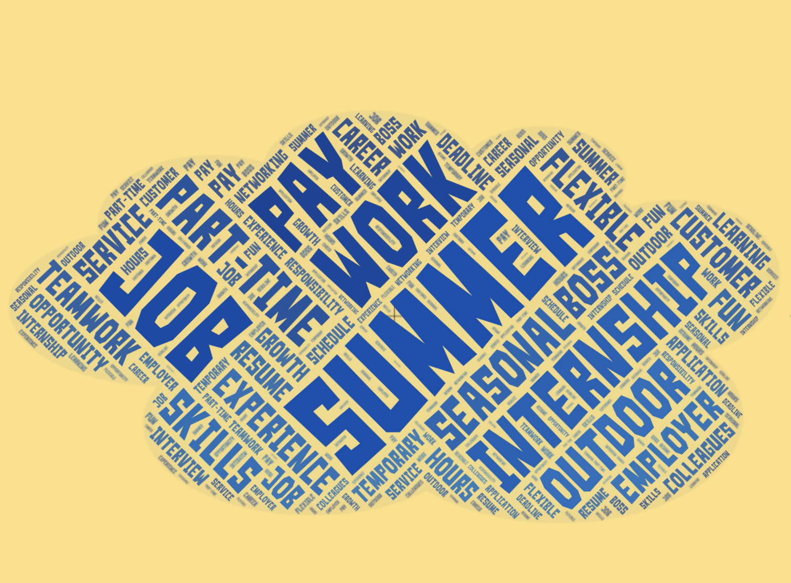

About Us
I created Ready Set Work! after watching my teemage nieces look for their summer jobs. I was surprised by how many different offices and institutions were involved in granting them the necessary permissions. I was also curious about how they looked for positions that were open to teenagers. My hope is that this website will pull together all of the different pieces that are needed to get young people into their summer jobs!
